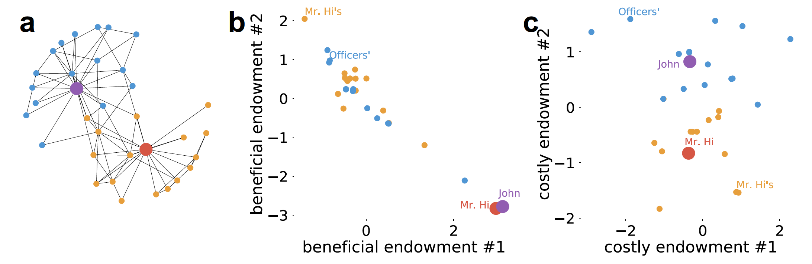

Feb 25, 2019
This blog is used to give a brief introduction to our latest paper at Nature Communications.
As an interdisciplinary researcher, I am always curious about how to integrate approaches from multiple disciplines. In my first year when I was studying microeconomics, I was fascinated by the mathematical beauty of the fundamental theorems of welfare economics. In the model, each consumer $i$ has her initial endowment $\mathbf{w}_i$, which is a real-valued vector. Consumers can exchange endowments with each other or producers. Then the price of each dimension of the endowment is determined, and the market achieves equilibrium and Pareto optimality.
Welfare economics lets me witness the power of theoretical models [in our paper we refer to such power as interpretability]. However as an empiricist, I also hoped to see how this beautiful model corresponds to real-world data [referred to as predictability]. I realized that the vector-based representation of individuals is very similar to representation learning in the machine learning community. Classical algorithms include word2vec, which represents each word by a vector. Words with semantic similarity or relatedness would be represented by vectors with small cosine distance.
Network embedding algorithms, such as DeepWalk or node2vec, extended word2vec to network data. Nodes that are closely connected or share similar local network structures are learned to have similar representations. The sociological insight was not well discussed in those papers. We conjecture that one contributing factor is homophily, which is a pervasive phenomenon describing that similar individuals tend to befriend each other.
Network embedding algorithms typically have the following pipeline.After learning representation for each node using the network data, a network embedding algorithm splits nodes into training and test sets and trains a machine learning model (e.g., by using SVM or $k$NN) on the training set. The input is the learned representation of each node and the output is any attribute that is not used in the previous representation learning process. The effectiveness of the learned representations can be demonstrated by the prediction performance on the test set.
Nonetheless, when we consider economic networks which involve exchanges as welfare economics does, those representation learning algorithms may fail to encapsulate important individual characteristics. Social exchange theory indicates that dissimilar individuals with their own advantages may interact and exchange. However, most network embedding models only implicitly considered homophily and ignored social exchange effects.
Our work thus contributes in two aspects. First, we propose a model with both interpretability and predictability by combining approaches from economics and machine learning. Our interdisciplinary approach effectively avoids the lack of predictive power in real-world for most economic approaches and the lack of sociological interpretability for the network embedding algorithms. Second, we consider social exchange and homophily simultaneously. Although social exchanges and homophily have been studied for decades in social science, these two branches of research have been conducted independently. We therefore want to propose a unified model of these two competing effects.
Here, we briefly explain how our model integrates interdisciplinary approaches to trade off between social exchange and homophily. We present an example definition of the marginal utility that $j$ gives to $i$, or $\Delta u_j(i)$: $$\Delta u_j(i) = \sum_k \max(b_k (w_{jk}-w_{ik}), 0) - \sqrt{\frac{1}{K} \sum_k c_k^2 * {(w_{ik}-w_{jk})}^2}$$ where $\mathbf{w}_i \in \mathbb{R}^K$ is called the $K$-dimensional endowment vector for individual $i$. $\mathbf{b}$ and $\mathbf{c}$ are called beneficial (costly) scaling parameters, meaning how benefit (costly) each dimension is. The equation consists of two components: the benefits of exchanges and the costs of difficulty in communications. The max and norm functions are used to guarantee positivity for respective terms.
Our paper uses the Karate club network as an toy example. Karate club network was polarized to two parties because of a conflict between two leaders. Setting the dimensionality as 4, we learn the endowment vectors for all individuals. As shown the figure below, we interpret the indications of the four dimensions as the karate skill, willingness to learn, unobserved characteristic, and the opinion on the conflict, respectively.
Overall, our work has four phases:
Of course there are several future directions that can be based on our study. For example, one can propose many other functional forms for the marginal utility, or even propose utility functions that is non-separable to additive marginal utility functions. In addition, one can also consider the marginal utility given by k-hop neighbors ($k>1$), comparative advantages, or dynamic networks.
Other references:
How to cite: Yuan Yuan, Ahmad Alabdulkareem, and Alex Sandy Pentland. "An interpretable approach for social network formation among heterogeneous agents." Nature communications 9.1 (2018): 4704.
Or BibTex:
@article{yuan2018interpretable,
title={An interpretable approach for social network formation among heterogeneous agents},
author={Yuan, Yuan and Alabdulkareem, Ahmad and Pentland, Alex Sandy},
journal={Nature communications},
volume={9},
number={1},
pages={4704},
year={2018},
publisher={Nature Publishing Group}
}